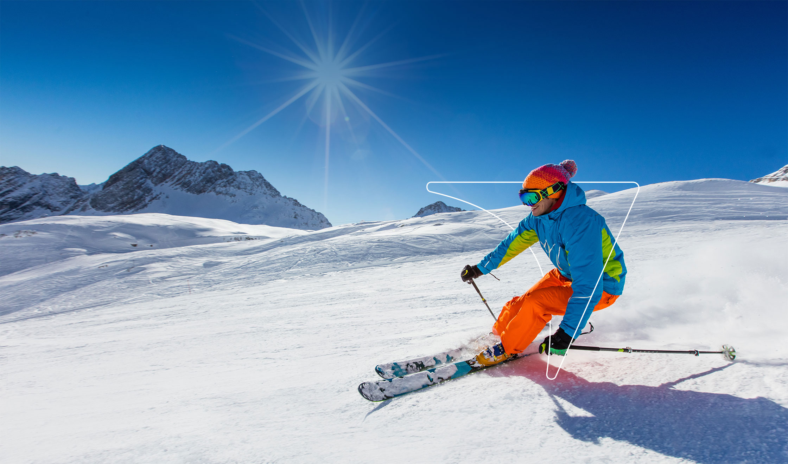
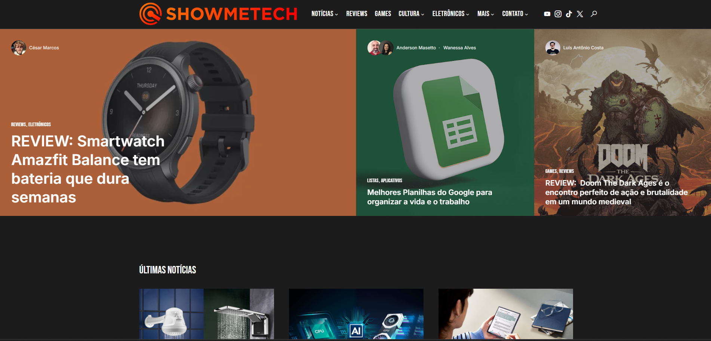

Ski Brasil
Redesign e desenvolvimento de plataforma e-commerce para maior loja de equipamentos de esportes de inverno do Brasil.
Visão Geral do Projeto
A Ski Brasil, maior varejista de equipamentos de esportes de inverno do país, enfrentava desafios com sua plataforma de e-commerce desatualizada. O site apresentava problemas de usabilidade, baixa taxa de conversão e dificuldades na gestão de estoque e pedidos. O objetivo do projeto era redesenhar completamente a experiência digital da marca, criando uma plataforma moderna, responsiva e otimizada para conversão, além de simplificar os processos internos de gestão.
Pesquisa e Estratégia
O processo começou com uma extensa pesquisa com usuários e análise de dados do site existente. Identificamos os principais pontos de atrito no funil de compra e mapeamos a jornada do cliente desde a descoberta do produto até o pós-venda. Também realizamos benchmarking com e-commerces internacionais do setor de esportes de inverno para identificar melhores práticas.
Com base nos insights coletados, desenvolvemos uma estratégia focada em três pilares: experiência de compra simplificada, apresentação detalhada dos produtos com conteúdo educativo, e um sistema de recomendações personalizado baseado no perfil e histórico do usuário.
Design e Interface
O redesign visual adotou uma estética clean e moderna, com amplo uso de espaço branco e uma paleta de cores inspirada nos ambientes de neve e montanha. Criamos um sistema de design consistente com componentes reutilizáveis, facilitando a manutenção e expansão futura da plataforma.
As páginas de produto foram completamente repensadas para destacar informações técnicas relevantes para a decisão de compra, como materiais, tecnologias e recomendações de uso. Implementamos visualizações em 360° para produtos selecionados e vídeos demonstrativos para equipamentos mais técnicos.
Desenvolvimento e Implementação
A plataforma foi desenvolvida utilizando uma arquitetura moderna e escalável. O frontend foi construído com React.js, garantindo uma experiência de usuário fluida e responsiva. Para o backend, implementamos uma solução baseada em Node.js integrada com o sistema de gestão existente da empresa.
Recursos especiais incluíram um configurador de equipamentos que permite aos clientes personalizar seus produtos, um sistema de filtros avançados para facilitar a busca em um catálogo extenso, e integração com múltiplas formas de pagamento, incluindo opções de parcelamento específicas para o mercado brasileiro.
Otimização e Performance
Implementamos estratégias avançadas de SEO para melhorar o posicionamento orgânico da loja, incluindo otimização de URLs, estrutura de dados schema.org, e conteúdo rico para termos relevantes do setor. A performance do site foi cuidadosamente otimizada, alcançando pontuações acima de 90 no Google PageSpeed Insights tanto para desktop quanto para dispositivos móveis.
Para garantir uma experiência consistente em todas as regiões do Brasil, implementamos uma CDN (Content Delivery Network) que reduziu significativamente o tempo de carregamento, especialmente para usuários em locais mais distantes dos centros urbanos.
Resultados e Impacto
Nos três meses seguintes ao lançamento da nova plataforma, a Ski Brasil registrou um aumento de 43% na taxa de conversão e uma redução de 35% na taxa de abandono de carrinho. O tempo médio de sessão aumentou em 27%, e o valor médio dos pedidos cresceu 18%, indicando maior engajamento e confiança dos usuários.
O tráfego orgânico cresceu 52% em seis meses, reduzindo a dependência de mídia paga. Internamente, a equipe de atendimento ao cliente relatou uma diminuição de 40% nas dúvidas relacionadas a produtos e processos de compra, graças à clareza das informações apresentadas no site.